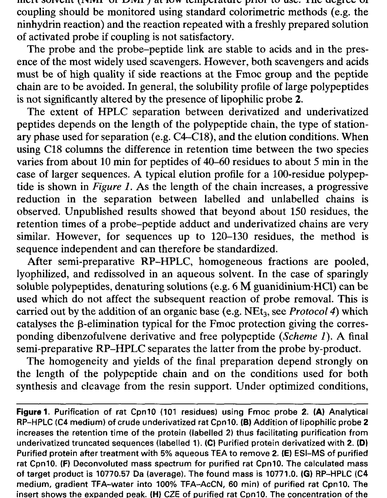

第十二章 Purification of Large Peptides Using Chemoselective Tags 利用化学选择性标签纯化大肽
作者：Paolo Mascagni
书页范围：pp. 265–276
随着 SPPS 技术的发展，合成越来越长的肽链（>50 个氨基酸残基）成为可能。然而，大肽（large peptides）的纯化面临严峻挑战：
粗产物成分复杂——包含目标肽、截短序列 (truncated sequences)、缺失序列 (deletion sequences)、外消旋化产物等
大肽在 RP-HPLC 中的色谱行为相近——疏水性差异小，难以分离
目标肽与截短产物的分子量和极性相似，传统反相 HPLC 分辨率不足
大肽可能聚集或吸附，降低回收率
化学选择性标签 (chemoselective tags) 策略为解决这一难题提供了创新思路：通过在合成过程中选择性标记目标肽，利用标签的独特物理化学性质辅助分离纯化，然后去除标签得到纯净目标产物。
化学选择性标签策略的核心是"标记-分离-去标签"三步法：
标记 (Tagging)：在 SPPS 最后一步（或特定步骤）引入化学标签 (tag)，该标签通过选择性化学反应仅与目标肽的特定基团（如 N端氨基）偶联。
分离 (Separation)：利用标签的独特性质（增强疏水性、亲和结合能力等），通过 RP-HPLC 或亲和色谱将带标签的目标肽与未标记杂质分离。
去标签 (Detagging)：纯化完成后，通过温和化学反应去除标签，恢复目标肽天然结构。去标签条件必须不影响肽链。
关键要求：（1）标签引入反应高效且选择性好的；（2）标签显著改变色谱行为；（3）去标签条件温和，不破坏肽链；（4）流程实用且可重复。
Fmoc（9-fluorenylmethyloxycarbonyl）基团具有显著疏水性（含芴环芳香结构）。Mascagni 课题组巧妙利用这一点，将 Fmoc 作为"色谱探针" (chromatographic probe)：
在 SPPS 合成结束时，将 Fmoc 基团引入目标肽 N端（或特定位置）
Fmoc 的强疏水性使带标签目标肽在 RP-HPLC 中保留时间显著延长
与未标记的截短产物、缺失产物有效分离
纯化后用哌啶 (piperidine) 去除 Fmoc——Fmoc-SPPS 的标准脱保护条件
| 步骤 | 操作 | 说明 |
|---|---|---|
| 1. SPPS 合成 | 按标准 Fmoc-SPPS 流程合成，最后一个 Fmoc 不去除 | 保留 N端 Fmoc 作为色谱标签 |
| 2. 切割与脱保护 | TFA 切割树脂 + 去除侧链保护基 | N端 Fmoc 在 TFA 中稳定 |
| 3. 粗产物分析 | RP-HPLC 分析粗产物 | 目标肽(含Fmoc)与杂质(无Fmoc)疏水性差异显著 |
| 4. 半制备 RP-HPLC | 利用 Fmoc 疏水性差异分离 | 带 Fmoc 目标肽保留时间更长 |
| 5. 去 Fmoc 标签 | 20% 哌啶/DMF, 15–20 min | 温和条件，不影响肽链 |
| 6. 最终纯化 | 再次 RP-HPLC 纯化 | 去除脱保护副产物 (dibenzofulvene 等) |
Fmoc 色谱探针策略的优势在于简洁性——Fmoc 既是 SPPS 标准保护基，又兼作色谱标签，无需额外非天然基团。去标签条件（哌啶）也是 SPPS 标准操作。
有两种引入 Fmoc 标签的策略：
策略一：保留 N端 Fmoc——SPPS 最后一个氨基酸的 Fmoc 不去除，直接 TFA 切割。Fmoc 在 TFA 中稳定。
策略二：合成后选择性引入——N端需游离氨基时，纯化后选择性引入。
生物素 (biotin) 与链霉亲和素 (streptavidin) 之间的结合是自然界中最强的非共价相互作用之一（Kd 约 10^-15 M）。利用此特性将生物素作为亲和标签选择性"捕获"目标肽：
在 SPPS 中将生物素标签连接到目标肽 N端或特定位置
粗产物通过链霉亲和素亲和柱 (streptavidin-agarose column)
带生物素标签的目标肽被特异性捕获，杂质流出
洗脱（变性剂或生物素竞争洗脱）回收目标肽
去除生物素标签（需可断裂连接臂，如二硫键或光敏连接臂）
由于生物素-链霉亲和素结合极强，需设计可断裂连接臂 (cleavable linker)：
| 连接臂类型 | 断裂条件 | 优缺点 |
|---|---|---|
| 二硫键 (Disulfide) | DTT / beta-巯基乙醇还原 | 温和，但需避免 Cys 干扰 |
| 光敏连接臂 (Photocleavable) | UV 350–365 nm | 干净，需特殊光源 |
| 酸敏连接臂 (Acid-labile) | 弱酸 (如 TFA) | 简单，可能与保护基冲突 |
| 酶切连接臂 (Enzyme-cleavable) | 蛋白酶 (TEV, thrombin) | 高特异性，酶可能影响肽 |
生物素亲和探针优势：极高的纯化倍数——一步亲和纯化即达很高纯度。缺点：需额外连接臂设计和去标签步骤。
SPPS 中每步偶联不可能 100% 完成。未反应肽链 (truncated sequences) 是主要杂质。传统方法用 Ac2O 封端（乙酰化）。创新策略：用色谱活性标签封端未反应链——
每步偶联后，用色谱标签（如 Fmoc-ONs 或疏水标签）封端未反应氨基
截短产物带多个色谱标签，疏水性显著增强
RP-HPLC 中，带多标签的截短产物与目标肽色谱行为差异增大
更容易通过色谱分离去除截短产物
| 封端试剂 | 引入标签 | 效果 |
|---|---|---|
| Fmoc-ONs / Fmoc-OSu | Fmoc (疏水) | 增加截短产物保留时间 |
| 芘乙酰氯 (Pyrenylacetyl) | 芘基 (强荧光+疏水) | 便于检测和分离 |
| DNFB (2,4-二硝基氟苯) | DNP (强疏水+可见吸收) | 便于检测 |
| 生物素-NHS | 生物素 (亲和标签) | 可用亲和色谱分离 |
注意：封端策略增加合成成本（标签试剂较贵），但显著提高最终产物纯度，对大肽合成尤为有价值。
rat Cpn10（大鼠 Chaperonin 10）是一个 101 个氨基酸残基的蛋白质，验证化学选择性标签策略的经典案例。101 残基远超常规 SPPS 极限（~50–60 aa），需片段连接 (ligation) 策略合成，纯化是核心难题。
Mascagni 课题组使用 Fmoc 色谱探针策略纯化 rat Cpn10：
将 rat Cpn10 分为多个片段进行 SPPS 合成
每个片段在合成时保留 N端 Fmoc 标签
片段经化学连接后，产物带有 Fmoc 标签
利用 Fmoc 疏水性增强 RP-HPLC 分离效果
纯化后用哌啶去除 Fmoc 标签，得到天然 rat Cpn10

Figure 1. Fmoc 探针纯化 rat Cpn10 的 HPLC 色谱图（p.270）
如 Figure 1 所示，HPLC 色谱图展示了 Fmoc 标签策略的效果：
带 Fmoc 标签的目标肽保留时间明显延长（与无标签杂质相比）
目标峰与杂质峰的分离度 (resolution) 显著改善
去除 Fmoc 后目标肽纯度很高——分析型 HPLC 和 MS 确认
回收率满意——对 101 残基大肽来说已是非常好的结果
这一实例证明了 Fmoc 色谱探针策略在大肽纯化中的实用价值，特别是对于 >50 残基的肽段，传统 HPLC 难以有效分离时。
标签容量有限——一个 Fmoc 对极大肽段 (>100 aa) 疏水性增强可能不足
Fmoc 在长时间 TFA 处理下可能部分脱落
去除 Fmoc 后需二次纯化（去除 dibenzofulvene 等副产物）
需可断裂连接臂——增加合成复杂性
链霉亲和素柱成本较高——大规模纯化不经济
洗脱条件可能导致变性
| 策略 | 最佳适用范围 | 纯化倍数 | 操作复杂度 | 成本 |
|---|---|---|---|---|
| Fmoc 色谱探针 | 50–120 aa | 中等 (3–10x) | 低 | 低 |
| 生物素亲和探针 | 各种大小 | 高 (>100x) | 中等 | 中–高 |
| 封端标签策略 | 配合上述使用 | 中等 | 低–中 | 中 |
总体而言，化学选择性标签策略为大肽纯化提供了实用的解决方案。其中 Fmoc 色谱探针因操作简便、成本较低而最为实用。对于极其困难的纯化问题，可组合使用多种标签策略。
大肽 (>50 aa) 纯化的核心困难：粗产物复杂、色谱行为相近、分离度不足
化学选择性标签策略："标记 -> 分离 -> 去标签"三步法
Fmoc 色谱探针：利用 Fmoc 疏水性增强 RP-HPLC 分离，去标签用标准哌啶条件——最简洁实用的方案
生物素亲和探针：利用生物素-链霉亲和素强相互作用，纯化倍数极高，但需设计可断裂连接臂
封端标签策略：用色谱标签封端未反应链，增大截短产物与目标肽的色谱差异
rat Cpn10 (101 aa) 的纯化验证了 Fmoc 探针策略的实用价值
标签策略可组合使用，针对不同纯化难题灵活选择